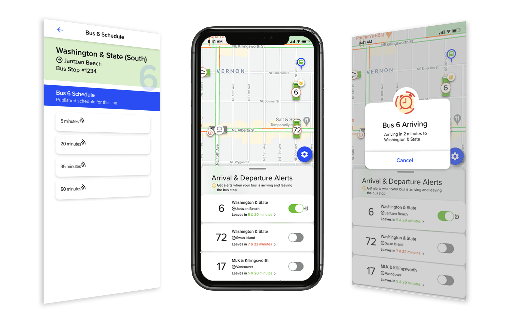

Hi, I'm Leah
A UX Designer with front end aptitude seeking ways to use design for positive change. Welcome to my website.
Check this out
Bus Spot


Bus Spot is a transit scheduling app that makes it easy for riders to visually locate their bus and reduce unexpected runs to the bus stop.
Case Study


greener

Greener makes sustainable practices fun by earning points and getting rewards for incorporating responsible habits into your life.
Case Study